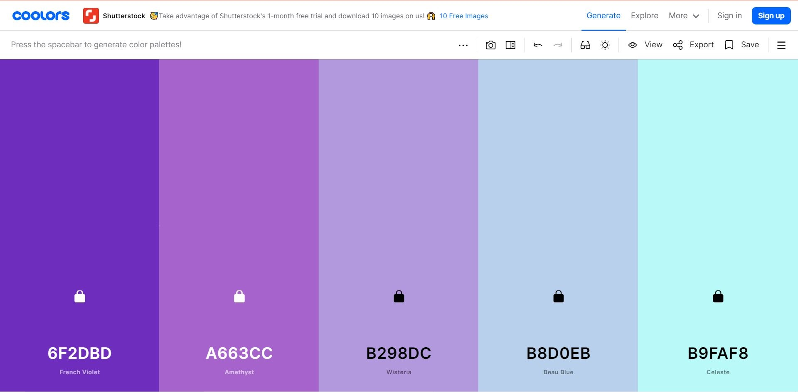
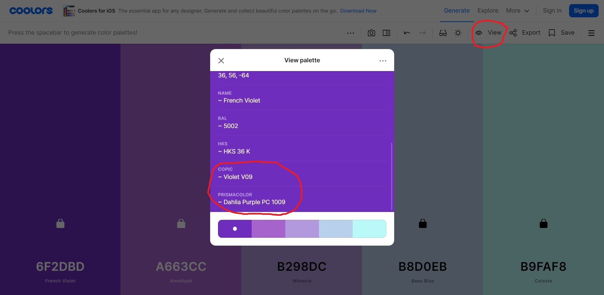
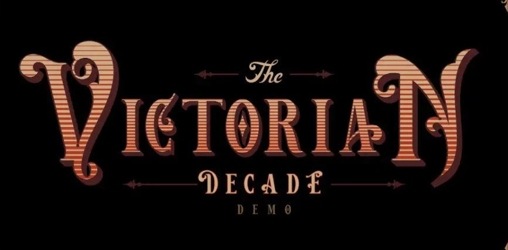

August 2, 2021 │ By : Inaas Asad
Everybody loves free stuff, so I hope you don’t get bored reading this post.
The web is flooded with tons of tools that artists and designers can utilize in their work. From providing intricate typography fonts to color palettes to free books, these websites and apps should be used by every creative person.
1. Coolors.co: Find or make color palettes.
Coolors.co is a fascinating website (also available as an IOS app) that generates unlimited color palettes. Not only can you create custom ones, but you can also upload any photo and extract one from it automatically. You can also generate custom gradients and create collages.
Here’s a color palette I generated using Coolors:
You can generate you own here: https://coolors.co/generate
That’s not even the best part. After you’re satisfied with the colors, you can copy the HEX codes, or you can go on the “View” tab. There, it will show you which Prismacolor shade and Copic marker shade is closest to each color in your palette.
2. Freetypography.com: Find cool fonts.
As the name suggests, you can find unique, free fonts to use in your projects. The fonts can be downloaded in one click without any registration. Here’s a font that I particularly liked. It’s called “Victorian Decade”:
Here’s the link: https://freetypography.com/2020/06/16/free-font-victorian-decade/
3. B-ok.org : Download free books.
One of the best ways to get ideas, inspiration and knowledge is by reading books. There are thousands of art related books out there ready to feed your brain, and to have access to them, you don’t have to pay a penny. B-ok.org is easily one of the most useful websites I’ve ever discovered. You can download free e-books from their huge collection. Yes. Free.
I’ll probably do a blog post on art related book recommendations soon.
4. Canva: Free graphic design tool.
I’m absolutely obsessed with Canva. If you’re into graphic design, this website is heaven. You can create designs in countless categories ranging from social media posts, posters, logos, infographics, book covers and more! You don’t need any graphic design experience because their website is packed with ready-to-use templates and huge libraries with pre-made graphics.
Something I recently discovered was that you can access Canva’s Pro tier for free if you’re a student. Github partnered with a bunch of companies to offer numerous benefits to students. Although they’re mostly for students in tech fields, one of them is a free 12 month subscription to Canva’s Pro tier. If you’re a student, just go to https://education.github.com/pack to learn more and claim your benefit!
Other Posts: